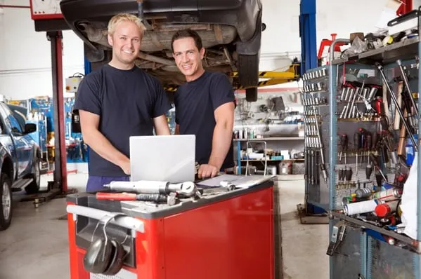
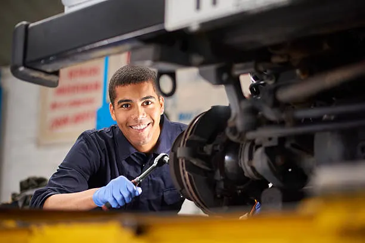

SOBRE NOSOTROS
Tu taller de confianza.
Fundada en 1998 en Montevideo, Uruguay, Candiota Reparaciones nació del sueño de ofrecer un servicio
automotriz
confiable, transparente y con verdadera atención humana. Lo que comenzó como un pequeño taller
familiar
con solo dos
elevadores y muchas ganas, hoy es un centro integral de mantenimiento y reparación reconocido por su
calidad, compromiso
y cercanía con el cliente.

HISTORIA
Candiota Reparaciones abrió sus puertas en 1998 como un pequeño taller familiar en el corazón
de Montevideo. Con
esfuerzo, dedicación y amor por los motores, fuimos creciendo hasta convertirnos en un
referente local en mantenimiento
y reparación automotriz. Nuestra historia está marcada por la confianza de nuestros
clientes, muchos de los cuales nos
acompañan desde nuestros primeros días.
METODOLOGIA
Creemos que cada vehículo merece un trato único. Realizamos diagnósticos completos y
detallados
antes de cualquier intervención, priorizando siempre la seguridad y la transparencia.
Trabajamos con repuestos de calidad, herramientas modernas y un enfoque centrado en la
comunicación con el cliente. Cada
reparación se realiza con el compromiso de entregar resultados duraderos y un servicio
honesto.

EMPLEADOS
Nuestro equipo está formado por técnicos calificados y apasionados por la mecánica. Cada uno
aporta años de experiencia
en distintas áreas: mecánica general, electricidad automotriz, frenos, suspensión y
diagnóstico electrónico.
Más que compañeros, somos una familia que comparte el mismo objetivo: que cada cliente se
vaya tranquilo y satisfecho,
sabiendo que su vehículo está en las mejores manos.
FAQS
¿Necesito agendar hora o puedo venir directamente al taller?
Recomendamos agendar previamente para asegurar un mejor servicio y evitar esperas. Sin embargo,
si venís sin cita y tenemos disponibilidad, te atendemos con gusto.
¿Usan repuestos originales o alternativos?
Trabajamos con repuestos originales y alternativos de primera calidad, según la preferencia y el
presupuesto del cliente. Siempre garantizamos la seguridad y durabilidad del trabajo.
¿Qué medios de pago aceptan?
Aceptamos efectivo, transferencias bancarias, y tarjetas de débito y crédito. También ofrecemos
facilidades de pago para servicios mayores.